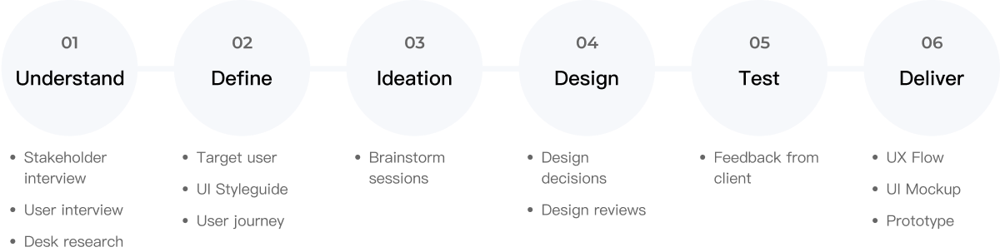
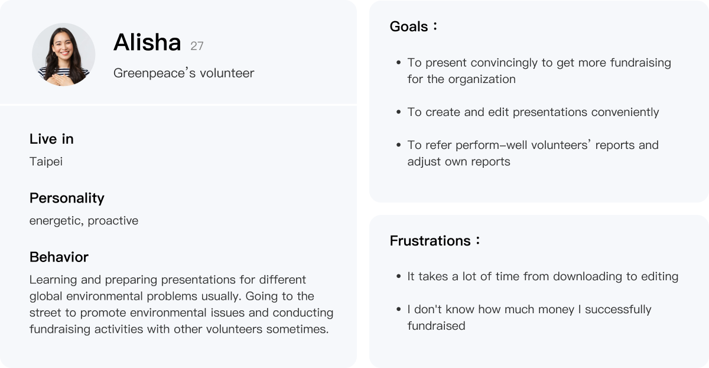
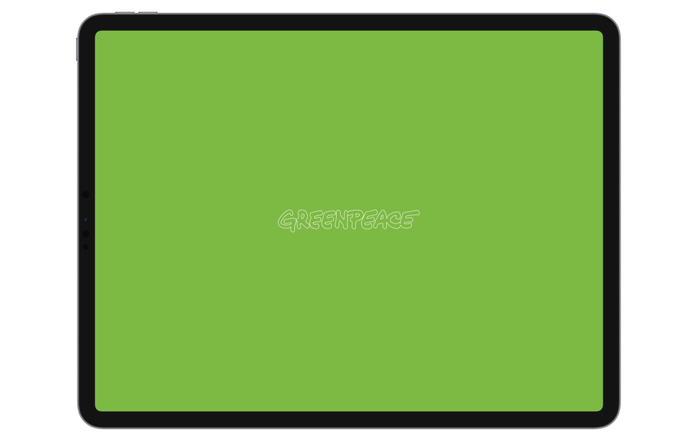
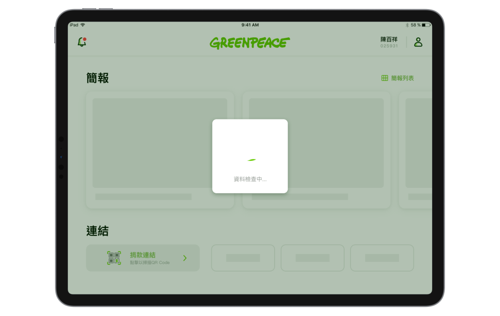

UI Styleguide
Standardize the use and details of all components to design with consistency

Select the primary color from Greenpeace's brand color and choose PingFang TC as font

Greenpeace is an independent, nonprofit, global campaigning organization that uses non-violent, creative confrontation to expose global environmental problems and their causes. Their volunteers would usually go to the street to promote environmental issues and conduct fundraising activities.
Our goal of the project is to help Greenpeace's volunteers download and edit presentations outside conveniently, and make them promote more smoothly. Also, to meet their needs, this project is specially developed only for tablet devices.
Designer team of 2
In this project, I worked at the agency hired by Greenpeace, including, PM, SA, Design, Dev, QA Team
6 Months
Sketch | Affter Effects

After interviews with volunteers and project owners from Greenpeace, we found out the problems they encountered and their needs when they go on the street to promote. The result shows that:

Standardize the use and details of all components to design with consistency
Select the primary color from Greenpeace's brand color and choose PingFang TC as font
The homepage is divided into two sections: "Presentation" and "Links".
Users could quickly review the recent presentation, because it sort by the time of the most recent browsing.
There are two types of links on the homepage, one is "Fundraising Link" with higher priority, and the other is "Top stories“ for additional sharing when promoting.
Users can see announcements from Greenpeace and notices for other users sharing presentations.
Users could share their presentations with others, and the recipient could preview the presentation and choose whether to apply it.
Users can add footage from Greenpeace and edit the presentation in edit mode.
Use Logo with the slogan for users to have a deep brand impression when they open the app
Use loading animation to reduce user frustration of waiting and increases their tolerance

